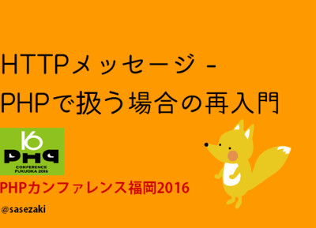

PHPカンファレンス福岡2016用特設ページ - 5月21日(土)開催
このページではPHPカンファレンス福岡2016『HTTPメッセージ - PHPで扱う場合の再入門』での参考文献などについて紹介します。
※ 発表前後に軽く目を通して頂くと幸いです。
発表スライドはこのページにて公開予定です。
PHPカンファレンス福岡のページへ
このページではPHPカンファレンス福岡2016『HTTPメッセージ - PHPで扱う場合の再入門』での参考文献などについて紹介します。
※ 発表前後に軽く目を通して頂くと幸いです。
発表スライドはこのページにて公開予定です。
PHPカンファレンス福岡のページへ
主な参考文献・記事
php と sapi と zendengine2 と..
http://www.slideshare.net/do_aki/php-and-sapi-and-zendengine2-and
PHP による hello world 入門
http://tech.respect-pal.jp/php-helloworld/
PHP output buffer in deep
http://jpauli.github.io/2014/12/19/php-output-buffer-in-deep.html
HTTP, PSR-7 and Middleware
https://akrabat.com/wp-content/uploads/2016-04-22-DC4D-PSR7.pdf
PSR-7: HTTP message interfaces
http://www.php-fig.org/psr/psr-7/
PSR-7: HTTP Message Meta Document
http://www.php-fig.org/psr/psr-7/meta/

セッションサマリー
PHPがWebのために開発され利用され20年。直観的なものであったPHPのAPIも複雑性を生み出す一因となってしまいました。抽象化の理解とその導入が煩雑さを避けるために必要となります。HTTPメッセージ利用について、PHP自体の機能とPHPプロジェクトでのアーキテクチャの変遷を踏まえつつ、開発者が意識しておきたい点を話したいと思います。PHP-FIG が2015年に策定した PSR-7の紹介を交えながら、SAPI・ストリーム・出力バッファリング・Middlewareについて考えていきます。
注意
今回の発表では、以下のトピックを重点的に取りあげる予定はありません。
TCP/IP。HTTP仕様(RFC 2616/7236-7239)。Cookie。PHPのセッション機構。WSGIほか
TCP/IP。HTTP仕様(RFC 2616/7236-7239)。Cookie。PHPのセッション機構。WSGIほか
登壇者について
させざき。長崎県佐世保市生まれ。東京都在住。
zendframeworkや、php-srcなどの各プロジェクトへの細かすぎるツッコミ活動に従事。 過去の主な発表は、PHPカンファレンス2011での『これからのPHPライブラリとパッケージマネージメントの話をしよう』など。
zendframeworkや、php-srcなどの各プロジェクトへの細かすぎるツッコミ活動に従事。 過去の主な発表は、PHPカンファレンス2011での『これからのPHPライブラリとパッケージマネージメントの話をしよう』など。
おまけのリンク
PHP - 憂鬱な希望としての PSR-7
http://sasezaki.hatenablog.com/entry/2015/03/07/195908
ストリーム 関連のプロジェクトの話
https://gistlog.co/sasezaki/fb703148b0542d61f0bb
PSR-7がストリーム利用ということで作成したコンポーネントに対する説明
Symfony ユーザ向け psr-7 zend-diactoros Middleware入門
http://psr7.net/sasezaki/slide20150620/
2015/06/20 Symfony Meetupでのスライド